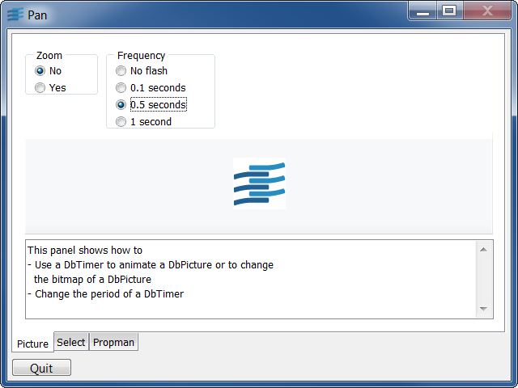
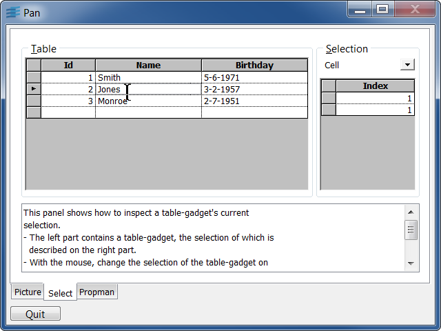
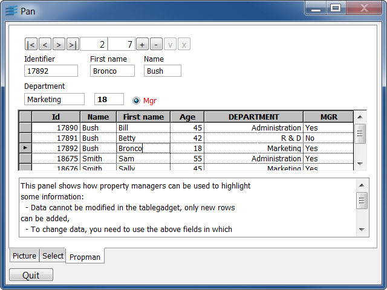

picThis sample shows how to change and animate the bitmap of a DbPicture.
If zoom is off, the Rogue Wave logo moves from right to left depending on the timer period.
If zoom is on, the Rogue Wave logo is maximized and its colors change depending on the timer period.
selectThis sample shows how to inspect a Table Gadget's current selection.
The selection of the left Table Gadget is described on the right part of the panel.
You can either:
propmanThis sample shows how to use property managers to highlight some information.
Data cannot be modified in the table Gadget; only new rows can be added (yellow row). To modify data, you need to use the above fields.
When selecting a row, the Age field is in bold font if its value is under 19 and the sex is displayed in red for a woman.